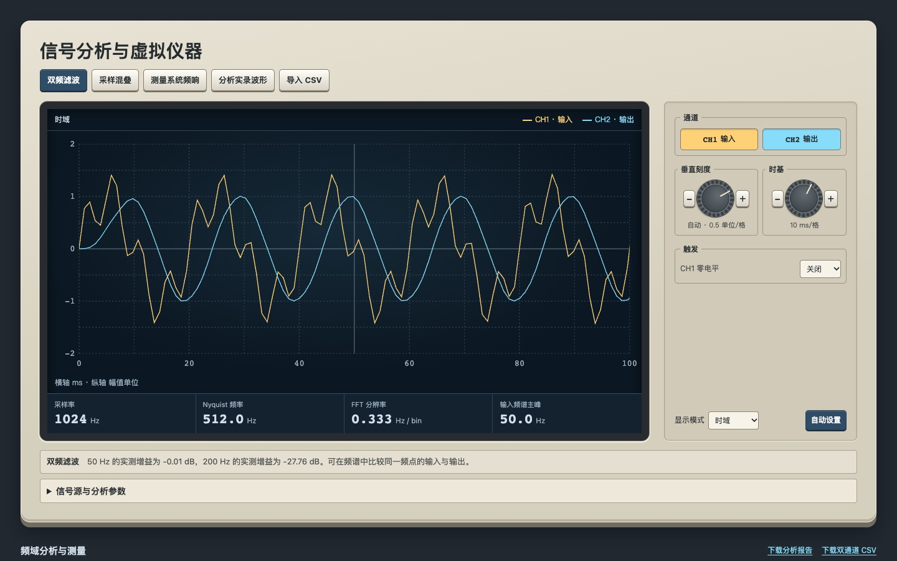

虚拟仪器
构建双通道虚拟示波器，整合Butterworth和Chebyshev滤波器、FFT及X-Y分析，分析滤波响应和输入输出关系。
2025.04
调整采样和滤波参数，对照时域波形、频谱与理论频响，观察混叠现象。
通过与已知滤波器的理论响应对照，只在激励充分、估计可靠的频点计算误差。
构建双通道虚拟示波器，整合Butterworth和Chebyshev滤波器、FFT及X-Y分析，分析滤波响应和输入输出关系。
开发带激励、相干性和平稳性检查的Welch H1估计器；通过27组改变噪声、窗长和重叠率的仿真量化误差。在无输出噪声、1024点窗与50%重叠的参考条件下，10–180 Hz有效频点的增益／相位MAE为0.0116 dB／0.0843°。


已知Butterworth系统的27组数值仿真：改变输出噪声、窗长及重叠率，在10–180 Hz有效频点对照理论响应。
| 输出噪声标准差 | 窗长 / 点 | 重叠比例 | 可靠频点 | 增益MAE / dB | 相位MAE / ° |
|---|---|---|---|---|---|
| 0 | 256 | 0 | 42 | 0.03781 | 0.27992 |
| 0 | 256 | 0.5 | 42 | 0.03135 | 0.20793 |
| 0 | 256 | 0.75 | 42 | 0.02134 | 0.19621 |
| 0 | 512 | 0 | 84 | 0.02661 | 0.16802 |
| 0 | 512 | 0.5 | 84 | 0.01739 | 0.11844 |
| 0 | 512 | 0.75 | 84 | 0.01012 | 0.09596 |
| 0 | 1024 | 0 | 169 | 0.01944 | 0.12072 |
| 0 | 1024 | 0.5 | 169 | 0.01163 | 0.08428 |
| 0 | 1024 | 0.75 | 169 | 0.00593 | 0.06592 |
| 0.1 | 256 | 0 | 37 | 0.12953 | 1.02894 |
| 0.1 | 256 | 0.5 | 38 | 0.09280 | 0.54110 |
| 0.1 | 256 | 0.75 | 38 | 0.09397 | 0.53276 |
| 0.1 | 512 | 0 | 76 | 0.19582 | 0.98882 |
| 0.1 | 512 | 0.5 | 77 | 0.14241 | 0.72218 |
| 0.1 | 512 | 0.75 | 76 | 0.13886 | 0.62163 |
| 0.1 | 1024 | 0 | 148 | 0.23154 | 1.25444 |
| 0.1 | 1024 | 0.5 | 151 | 0.20162 | 0.97860 |
| 0.1 | 1024 | 0.75 | 152 | 0.19585 | 0.92108 |
| 0.5 | 256 | 0 | 5 | 0.26199 | 2.62109 |
| 0.5 | 256 | 0.5 | 9 | 0.10173 | 1.21136 |
| 0.5 | 256 | 0.75 | 8 | 0.08335 | 1.36736 |
| 0.5 | 512 | 0 | 19 | 0.36808 | 2.21349 |
| 0.5 | 512 | 0.5 | 20 | 0.18828 | 1.99333 |
| 0.5 | 512 | 0.75 | 18 | 0.16924 | 1.89173 |
| 0.5 | 1024 | 0 | 35 | 0.45895 | 4.45986 |
| 0.5 | 1024 | 0.5 | 35 | 0.36627 | 2.97637 |
| 0.5 | 1024 | 0.75 | 35 | 0.33402 | 2.69577 |
MIT-BIH记录100的MLII通道前10秒，360 Hz，幅值单位mV。可在工作台载入此样本，检查非正弦输入的波形、频谱与数值滤波。